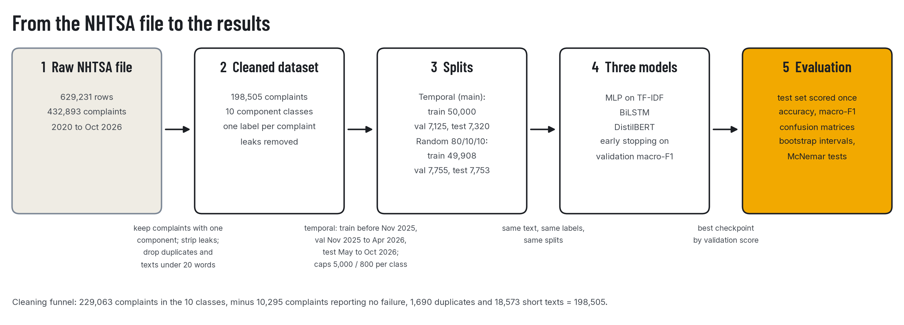

About
A class project in deep learning, built by one person, with all code, data and results published.
The project
This is an open individual project for a deep learning class. The question is whether the words of a vehicle owner complaint are enough to name the vehicle part that failed. We compared three neural networks on 198,505 cleaned complaints from NHTSA and report where they work and where they do not. The author is Tejas Naik.

Data
The complaints come from the National Highway Traffic Safety Administration (NHTSA), Office of Defects Investigation. NHTSA publishes them on its datasets page. This project is not made by, endorsed by or connected to NHTSA. We published a cleaned sample with only the columns odino, ldate, make, model, year, label, text, is_transcript, split and left out all personal fields.
Tools
- Python 3.12, PyTorch 2.15.0 (Apple MPS backend), Hugging Face transformers 5.22.1, scikit-learn 1.9.1, pandas 3.1.0, NumPy 2.5.4, SciPy 1.18.1, matplotlib 3.11.2 and seaborn 0.13.2. Pinned versions are in requirements.txt.
- Hardware: a MacBook Air with an M4 chip and 16 GB of memory. No cloud services were used.
- The website is plain HTML and one CSS file. It is built from the results files by 10_build_site.py, so the numbers on each page come from
results/. - Random seed 42 is used everywhere.
Please note
These results describe one dataset and one test window. They are not a safety assessment of any vehicle. To report a safety problem with a vehicle, use NHTSA's reporting page.
Source code and all results: github.com/tejassnaikk/vehicle-complaint-classifier.